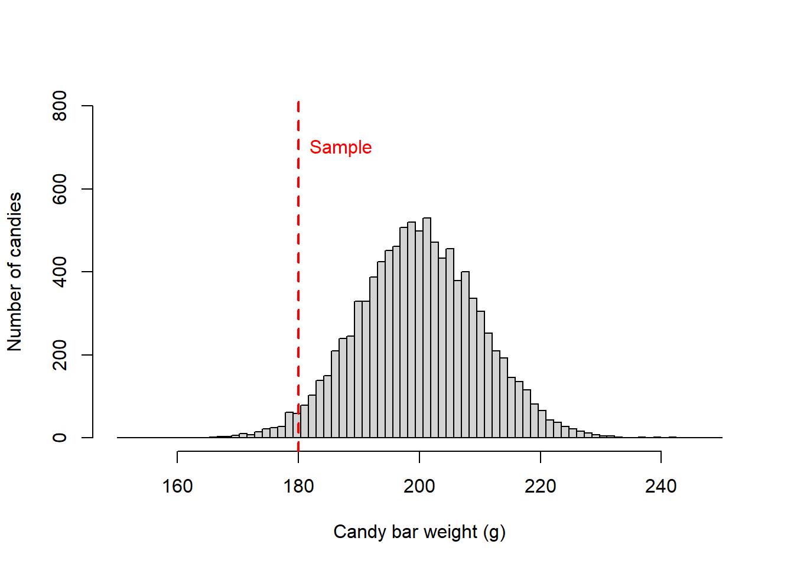
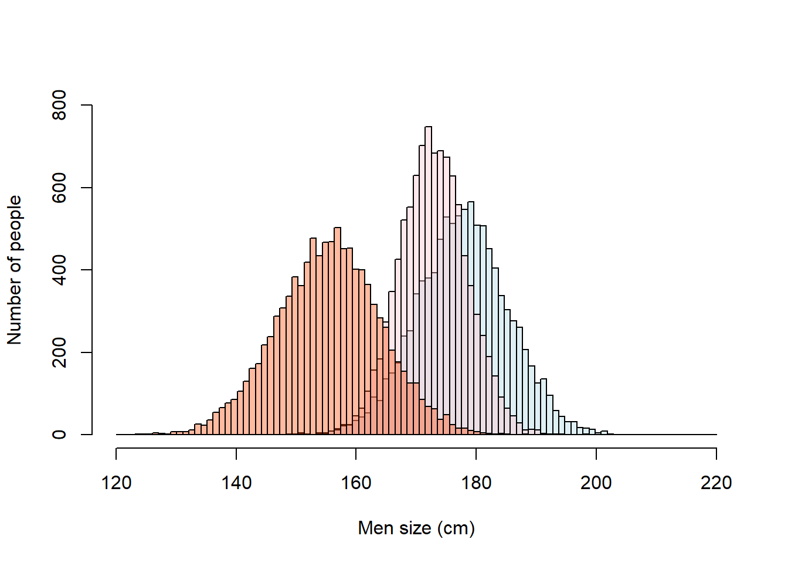

Alternative types of tests
When comparing samples, in broad terms, there are three likely options:
One sample test
This type of case relates to situations in which you have a sample parameter and you want to compare it a population.
Say you are disappointed by how much smaller the candy bars in a store look like. Say you take a few samples of candy bars and found they are on average 180g. The label says they are on average 200g +/-10g. This would be a case of a one-sample test. Basically, you have one sample and you want to find out if it is different to the expected value from a population.
Let’s visualize this:
SampleWeight=180 # this is the average weight of the samples you took
PopulationWeight=200 # Average weight reported in the lable of the candy bar. This of this as the population mean.
SD=10 # reported Standard deviation for the candy bars. Think if this as the population standard deviation
SimulatedPopulation<- rnorm(10000,PopulationWeight,SD) #lets simulate a population of 10000 candy bars.
breaks = seq(150, 250, length.out = 80) #I create a set of bins for the x-axis of the distribution, this will determine how many bis you have
#next I plot the data
hist(SimulatedPopulation, main=NA,xlim=c(150, 250),ylim=c(0, 800),breaks = breaks, xlab = "Candy bar weight (g)",ylab = "Number of candies")
#plot the sample mean
abline(v=SampleWeight, lwd=2, col="red", lty=2)
#lets add a label to mean label
text(SampleWeight,700,labels="Sample",pos=4, col="red") 
Two sample test
These are cases when you want to compare samples from two different populations.
Say you have noted that when you fuel-up your car at a gas station A, you can take on average one more trip to work than when you fuel-up your car at gas station B. You are suspecting gas station B is giving less gas than it is suppose to.
You can report this to a consumer group, and a likely test will be to take samples of one gallon from both gas stations and measure the actual volume they dispense. Say a sample of 50 trials yields volumes of 1.1 gal +/-.05gal in Gas station A and 1.01 gal +/-.02gal in Gas station B.
This is a case of a two-sample test. In this case, you can treat both samples as independent, and assume they come from independent populations that should be similar.
Lets visualize this:
MeanGasA=1.1 # average gas volume for a suspected 1 gallon dispensing at gas station A
SDGasA=0.05 # SD for sample from gas station A
MeanGasB=1.01 # average gas volume for a suspected 1 gallon dispensing at gas station B
SDGasB=0.02 # SD for sample from gas station B
SimulatedGasA<- rnorm(10000,MeanGasA,SDGasA) #lets simulate a population for gas station A.
SimulatedGasB<- rnorm(10000,MeanGasB,SDGasB) #lets simulate a population for gas station B.
breaks = seq(0.7, 1.4, length.out = 100) #I create a set of bins for the x-axis of the distribution, this will determine how many bis you have
#next I plot the data. because we want to plot two distributions on top of each other. we need to create each distribution independently and then add them to a single plot
#histogram for gas station A.
GasA= hist(SimulatedGasA, xlim=c(0.7, 1.4),ylim=c(0, 500),breaks = breaks, plot = FALSE)
#histogram for gas station B.
GasB= hist(SimulatedGasB, xlim=c(0.7, 1.4),ylim=c(0, 500),breaks = breaks, plot = FALSE)
#because you are plotting two distributions, it will be nice to use different colors. and because they likely overlap, you should use semitransparent colors
LightBlue <- rgb(173,216,230,max = 255, alpha = 5) #the function rgb lets you select one color, and the alpha gives you how transparent
DarkRed <- rgb(255,192,203, max = 255, alpha = 95)
#lets plot the first distribution
plot(GasA, main=NA,xlim=c(0.7, 1.4),ylim=c(0, 1500),breaks = breaks, xlab = "Dispensed gas volume for a reported 1 gallon (in gallons)",ylab = "Number of trials" ,col=LightBlue)
plot(GasB, add=T ,col=DarkRed) #note how for the parameter col, you indicate the color you create as a variable above
More than two sample test
These are cases when you want to compare samples from more than two different populations.
Say you have visited three countries and noticed that men were very different in height. You are use to the men in the USA, which we already established have an average height of 177.8cm +/-SD 7.62 cm. In France, they were 172.8cm +/-SD 5.62 cm and in North Korea they were 155.5 cm +/- 8.5cm.
This is a case of a three samples, at times called multiple samples.
Lets visualize this:
USA_Height=177.8 # height of average male in the USA
USA_SD=7.62 # Standard deviation of male population in the USA
France_Height=172.8 # France data
France_SD=5.62 # SD for france
NKorea_Height=155.5 # North Korea data
NKorea_SD=8.5 # SD for North Korea
SimulatedUSA<- rnorm(10000,USA_Height,USA_SD) #lets simulate a population for USA
SimulatedFrance<- rnorm(10000,France_Height,France_SD) #lets simulate a population for France
SimulatedNKorea<- rnorm(10000,NKorea_Height,NKorea_SD) #lets simulate a population for NKorea
breaks = seq(120, 220, length.out = 100) #bins for the distribution
#histogram for USA
USA= hist(SimulatedUSA, xlim=c(120,220),ylim=c(0, 500),breaks = breaks, plot = FALSE)
#histogram for FCrance
France= hist(SimulatedFrance, xlim=c(120,220),ylim=c(0, 500),breaks = breaks, plot = FALSE)
#histogram for USA
NKorea= hist(SimulatedNKorea, xlim=c(120,220),ylim=c(0, 500),breaks = breaks, plot = FALSE)
#because you are plotting three distributions, it will be nice to use different colors. and because they likely overlap, you should use semitransparent colors
LightBlue <- rgb(173,216,230,max = 255, alpha = 100) #the fucntion rgb lets your select one color, and the alpha gives you how tranparent
DarkRed <- rgb(255,192,203, max = 255, alpha = 95)
MiddleOrange <- rgb(255,69,0, max = 255, alpha = 95)
#lets plot the first distribution
plot(USA, main=NA,xlim=c(120, 220),ylim=c(0, 800),breaks = breaks, xlab = "Men size (cm)",ylab = "Number of people" ,col=LightBlue)
#now add the second distribution to the first plot, using the parameter add=TRUE, or add=T, theya re both the same
plot(France, add=T ,col=DarkRed) #note how for the parameter col, you indicate the color you create as a variable above
plot(NKorea, add=T ,col=MiddleOrange) #note how for the parameter col, you indicate the color you create as a variable above